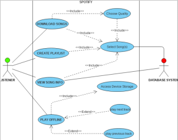
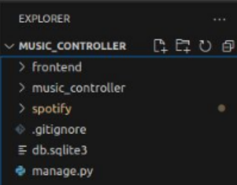

Projects:
Project Name:
SpotReveal
Project Description:
SpotReveal is a Spotify music recommendation system developed to suggest best music choices based on the interest of the Spotify user.
SpotReveal utilizes the public data feed for the registered users of SpotReveal to process and suggest the best options from the pattern of interest.
SpotReveal user can either accept or ignore the suggestion. If the user accepts the suggestion it is used for positive feedback for the SpotReveal.
Technologies used:
SpotReveal developed in Python for scripting. The web framework used is Django. For sata storage, sqlite3 is utilized. The source code with multiple versions and related files are managed by utilizing Git.
The project development utilized Scrum methodology. Discord is used for group communications.


Challenges faced:
SpotReveal is developed by group effort. Developing and testing SpotReveal required access to Spotify music by everybody. As some members had no Spotify membership, the free version of Spotify music is used.
Another challenge was testing, as this requires listening to Spotify music and create data for processing.
Outcome:
Project SpotReveal developed, tested and deployed successfully.